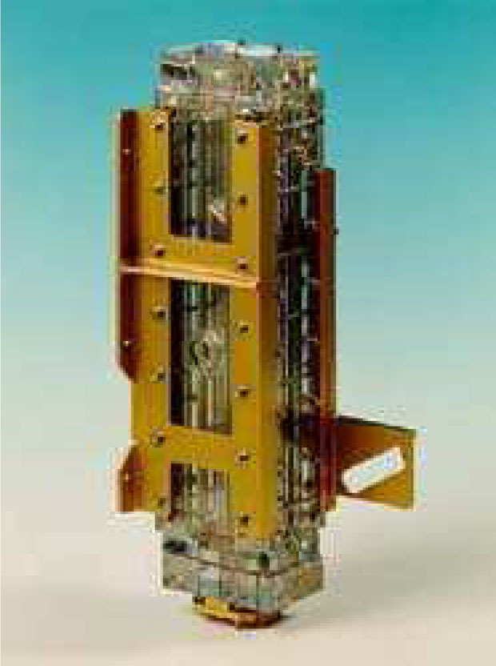
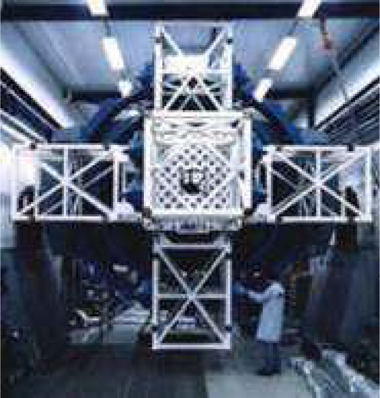
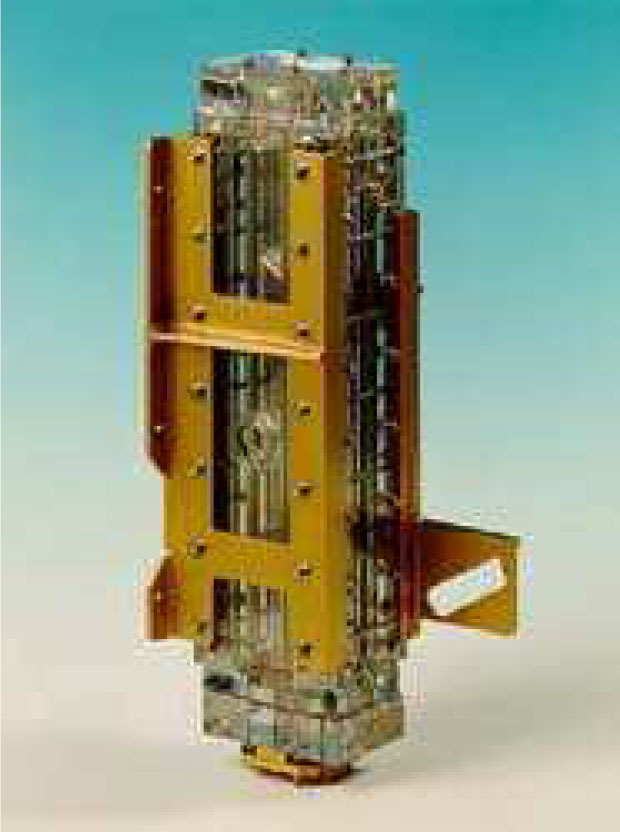
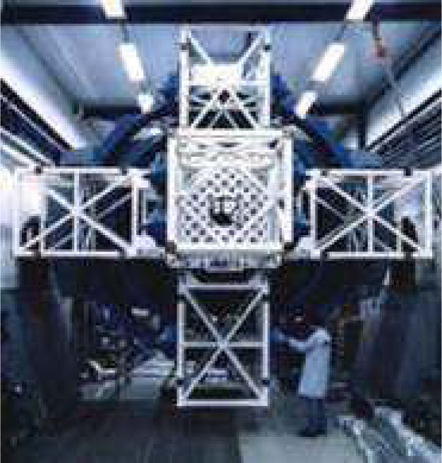

AMOS is a specialist in Advanced Mechanical and Optical Systems
Engineering officein the field of mechanical welding, turn-key projects
Mechanical and optical engineering
Manufacturingof e.g.
- high accuracy opto-mechanical systems;
- space simulators and high vacuum
systems;
- equipments for space experiences;
- large mirror polishing;
- telescopes, collimators,...
 



Contact Person
Mr Jef DIJCKMANS
General Manager
email: jef.dijckmans@allard-europe.com
website: www.allard-europe.com
Veedijk 51
2300 Turnhout
Belgium
Tel: 014 42 11 11